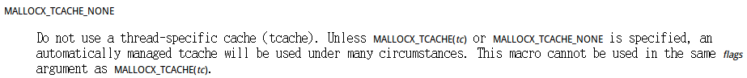
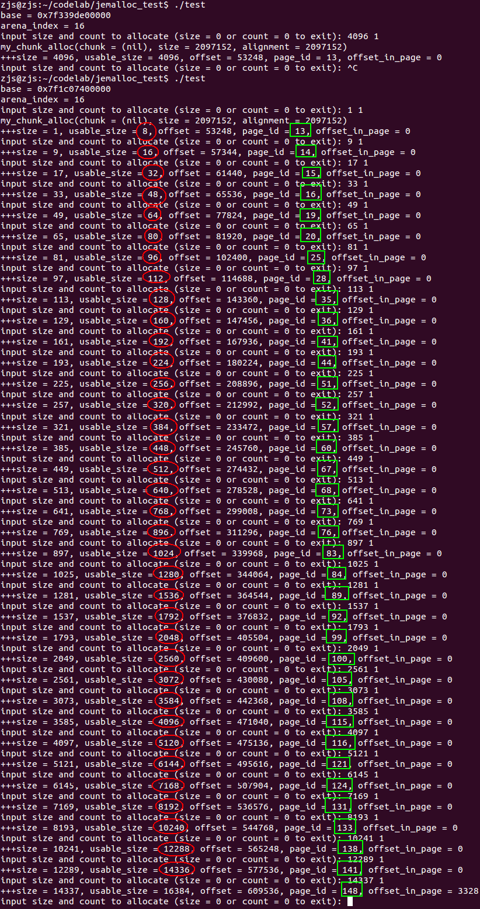

昨天写完《libmemkind探究（二）——jemalloc的内存分配规律以及size_classes_sh的修改》，总结了五条规律：
- 第[512 * n, 512 * n + 13)页都是跳过的；
- 用户传入的大小，会被“标准化”到一个档位，称为标准化大小；
- 一个页只会分配某一种标准化大小的small对象，而且这些small对象紧凑排布，向后递增；
- 一般地，标准化大小为std_size的small对象占用n页，4096 * n是4096与std_size的最小公倍数；
- 但是，同时，得确保4096 * n / std_size >= 10。
其中最后一条规律一直让我很困惑。因为在使用libmemkind做同样的事情的时候，并没有这么一条规则。比如在libmemkind中，分配一个大小为4096的对象时，只会占用一页，分配一个大小为1536的对象时，只会占用3页（4096 * 3 % 1536 = 0），而不是6页。总之，libmemkind是严格遵守了规律四：“标准化大小为std_size的small对象占用n页，4096 * n是4096与std_size的最小公倍数”。
这事情就有意思了，我反复对比了libmemkind对于je_mallctl()、je_mallocx()等函数的调用，发现唯一的区别在于libmemkind中，对于je_mallocx()的调用多了MALLOCX_TCACHE_NONE标记：
static void *jemk_mallocx_check(size_t size, int flags)
{
/*
* Checking for out of range size due to unhandled error in
* jemk_mallocx(). Size invalid for the range
* LLONG_MAX <= size <= ULLONG_MAX
* which is the result of passing a negative signed number as size
*/
void *result = NULL;
if (MEMKIND_UNLIKELY(size >= LLONG_MAX)) {
errno = ENOMEM;
}
else if (size != 0) {
result = jemk_mallocx(size, flags);
}
return result;
}
//....skip long code
MEMKIND_EXPORT void *memkind_arena_malloc(struct memkind *kind, size_t size)
{
void *result = NULL;
int err = 0;
unsigned int arena;
err = kind->ops->get_arena(kind, &arena, size);
if (MEMKIND_LIKELY(!err)) {
result = jemk_mallocx_check(size, MALLOCX_ARENA(arena) | MALLOCX_TCACHE_NONE);
}
return result;
}
我去查看jemalloc/doc/jemalloc.html中MALLOCX_TCACHE_NONE的介绍：

我一时不能理解为什么他能决定分配规律，于是打算亲自试验一下：
test.c
#include <stdio.h>
#include <assert.h>
#include <jemalloc.h>
#include <sys/mman.h>
#define PAGE_SIZE 4096
// 待管理的空间大小
size_t mem_size = 1 << 30;
// 待管理的空间的首地址
void* base;
// 已经分配出去的大小
size_t allocated = 0;
//+++++++++++++++++++++++++++++HOOK BEGIN+++++++++++++++++++++++++++++
// 从这里开始定义jemalloc管理chunk的hook函数，自定义chunk管理行为
// 可以参考jemalloc/doc/jemalloc.html中arena.<i>.chunk_hooks一段
// 当jemalloc发现chunk不够用了，会callback此函数索要空间
// chunk大小在编译时配置（原版jemalloc-4.0.3默认人2M，libmemkind配置为4M）
void* my_chunk_alloc(void *chunk, size_t size, size_t alignment, bool *zero, bool *commit, unsigned arena_index)
{
printf("my_chunk_alloc(chunk = %p, size = %lu, alignment = %lu)\n", chunk, size, alignment);
if(size % alignment)
return NULL;
if(allocated + size > mem_size)
return NULL;
if(chunk && chunk != base + allocated)
return NULL;
void* addr = base + allocated;
allocated += size;
return addr;
}
// 返回true表示该内存可以继续使用
bool my_chunk_dalloc(void *chunk, size_t size, bool commited, unsigned arena_index)
{
return true;
}
// 返回false表示内存充足
bool my_chunk_commit(void *chunk, size_t size, size_t offset, size_t length, unsigned arena_index)
{
return false;
}
// 返回true表示该内存即使释放了，也是与物理内存对应的，可以重用
bool my_chunk_decommit(void *chunk, size_t size, size_t offset, size_t length, unsigned arena_index)
{
return true;
}
// 返回true表示该段地址空间被重用后不会清空
bool my_chunk_purge(void *chunk, size_t size, size_t offset, size_t length, unsigned arena_index)
{
return true;
}
bool my_chunk_split(void *chunk, size_t size, size_t size_a, size_t size_b, bool commited, unsigned arena_index)
{
return false;
}
bool my_chunk_merge(void *chunk_a, size_t size_a, void *chunk_b, size_t size_b, bool commited, unsigned arena_index)
{
return false;
}
chunk_hooks_t my_chunk_hooks =
{
.alloc = my_chunk_alloc,
.dalloc = my_chunk_dalloc,
.commit = my_chunk_commit,
.decommit = my_chunk_decommit,
.purge = my_chunk_purge,
.split = my_chunk_split,
.merge = my_chunk_merge,
};
//-----------------------------HOOK END-----------------------------
int main()
{
// 模拟一段NVM空间，或者任何一段用户待管理的空间（这里有1GB)
base = mmap(0, mem_size, PROT_READ | PROT_WRITE, MAP_ANONYMOUS | MAP_PRIVATE, -1, 0);
if(base == MAP_FAILED)
{
printf("mmap() failed!\n");
return 1;
}
printf("base = %p\n", base);
// 用je_mallctl('arenas.extend')命令创建一个arean，
// 参考jemalloc/doc/jemalloc.html中arenas.extend一段
unsigned arena_index;
size_t unsigned_size = sizeof(unsigned int);
if(je_mallctl("arenas.extend", (void*)&arena_index, &unsigned_size, NULL, 0))
{
printf("je_mallctl('arenas.extend') failed!\n");
return 1;
}
printf("arena_index = %u\n", arena_index);
//为这个arena绑定我们自定义的chunk hook，于是该arena就会按我们的方式去申请/释放chunk
// 参考jemalloc/doc/jemalloc.html中arena.<i>.chunk_hooks一段
char cmd[64];
sprintf(cmd, "arena.%u.chunk_hooks", arena_index);
if(je_mallctl(cmd, NULL, NULL, (void*)&my_chunk_hooks, sizeof(chunk_hooks_t)))
{
printf("je_mallctl('%s') failed!\n", cmd);
return 1;
}
// 接着试试分配内存，使用je_mallocx()、je_callocx()等以x结尾的函数，指定MALLOCX_ARENA(arena_index)，
// 那么就会在我们创建的arena中分配内存
while(true)
{
printf("input size and count to allocate (size = 0 or count = 0 to exit): ");
size_t size, count;
if(scanf("%lu %lu", &size, &count) != 2)
continue;
if(!size || !count)
break;
for(size_t i = 0; i < count; i++)
{
void* ptr = je_mallocx(size, MALLOCX_ARENA(arena_index) | MALLOCX_TCACHE_NONE);
if(!ptr)
{
printf("je_mallocx(%lu, MALLOCX_ARENA(%u)) failed\n", size, arena_index);
break;
}
assert(ptr >= base);
// 算一算偏移量
size_t offset = ptr - base;
// 是待管理空间的第几个page
size_t page_id = offset / PAGE_SIZE;
// page内偏移多少
size_t offset_in_page = offset % PAGE_SIZE;
// 实际分配大小
size_t usable_size = je_malloc_usable_size(ptr);
printf("+++size = %lu, usable_size = %lu, offset = %lu, page_id = %lu, offset_in_page = %lu\n",
size, usable_size, offset, page_id, offset_in_page);
}
}
if(munmap(base , mem_size) != 0)
{
printf("munmap() failed!\n");
return 1;
}
return 0;
}
与《libmemkind探究（二）——jemalloc的内存分配规律以及size_classes_sh的修改》中的第一份test.c的唯一区别就在于多了MALLOCX_TCACHE_NONE标记。接着编译，运行：
gcc -std=gnu99 test.c -o test -I../jemalloc-4.0.3/include/jemalloc -L../jemalloc-4.0.3/lib -ljemalloc export LD_LIBRARY_PATH=$(cd ..; pwd)/jemalloc-4.0.3/lib ./test

可以汇总一下：
| 标准化大小 | 占用页数 | 对象个数 | 是否有碎片 |
|---|---|---|---|
| 8 | 14 - 13 = 1 | (4096 * 1) / 8 = 512 | 否 |
| 16 | 15 - 14 = 1 | (4096 * 1) / 16 = 256 | 否 |
| 32 | 16 - 15 = 1 | (4096 * 1) / 32 = 128 | 否 |
| 48 | 19 - 16 = 3 | (4096 * 3) / 48 = 256 | 否 |
| 64 | 20 - 19 = 1 | (4096 * 1) / 64 = 64 | 否 |
| 80 | 25 - 20 = 5 | (4096 * 5) / 80 = 256 | 否 |
| 96 | 28 - 25 = 3 | (4096 * 3) / 96 = 128 | 否 |
| 112 | 35 - 28 = 7 | (4096 * 7) / 112 = 256 | 否 |
| 128 | 36 - 35 = 1 | (4096 * 1) / 128 = 32 | 否 |
| 160 | 41 - 36 = 5 | (4096 * 5) / 160 = 128 | 否 |
| 192 | 44 - 41 = 3 | (4096 * 3) / 192 = 64 | 否 |
| 224 | 51 - 44 = 7 | (4096 * 7) / 224 = 128 | 否 |
| 256 | 52 - 51 = 1 | (4096 * 1) / 256 = 16 | 否 |
| 320 | 57 - 52 = 5 | (4096 * 5) / 320 = 64 | 否 |
| 384 | 60 - 57 = 3 | (4096 * 3) / 384 = 32 | 否 |
| 448 | 67 - 60 = 7 | (4096 * 7) / 448 = 64 | 否 |
| 512 | 68 - 67 = 1 | (4096 * 1) / 512 = 8 | 否 |
| 640 | 73 - 68 = 5 | (4096 * 5) / 640 = 32 | 否 |
| 768 | 76 - 73 = 3 | (4096 * 3) / 768 = 16 | 否 |
| 896 | 83 - 76 = 7 | (4096 * 7) / 896 = 32 | 否 |
| 1024 | 84 - 83 = 1 | (4096 * 1) / 1024 = 4 | 否 |
| 1280 | 89 - 84 = 5 | (4096 * 5) / 1280 = 16 | 否 |
| 1536 | 92 - 89 = 3 | (4096 * 3) / 1536 = 8 | 否 |
| 1792 | 99 - 92 = 7 | (4096 * 7) / 1792 = 16 | 否 |
| 2048 | 100 - 99 = 1 | (4096 * 1) / 2048 = 2 | 否 |
| 2560 | 105 - 100 = 5 | (4096 * 5) / 2560 = 8 | 否 |
| 3072 | 108 - 105 = 3 | (4096 * 3) / 3072 = 4 | 否 |
| 3584 | 115 - 108 = 7 | (4096 * 7) / 3584 = 8 | 否 |
| 4096 | 116 - 115 = 1 | (4096 * 1) / 4096 = 1 | 否 |
| 5120 | 121 - 116 = 5 | (4096 * 5) / 5120 = 4 | 否 |
| 6144 | 124 - 121 = 3 | (4096 * 3) / 6144 = 2 | 否 |
| 7168 | 131 - 124 = 7 | (4096 * 7) / 7168 = 4 | 否 |
| 8192 | 133 - 131 = 2 | (4096 * 2) / 8192 = 1 | 否 |
| 10240 | 138 - 133 = 5 | (4096 * 5) / 10240 = 2 | 否 |
| 12288 | 141 - 138 = 3 | (4096 * 3) / 12288 = 1 | 否 |
| 14336 | 148 - 141 = 7 | (4096 * 7) / 14336 = 2 | 否 |
果然，有了MALLOCX_TCACHE_NONE标记，真的严格遵守了最小公倍数法则。所以总结一下，就是四条规律：
- 第[512 * n, 512 * n + 13)页都是跳过的；
- 用户传入的大小，会被“标准化”到一个档位，称为标准化大小；
- 一个页只会分配某一种标准化大小的small对象，而且这些small对象紧凑排布，向后递增；
- 标准化大小为std_size的small对象占用n页，4096 * n是4096与std_size的最小公倍数。